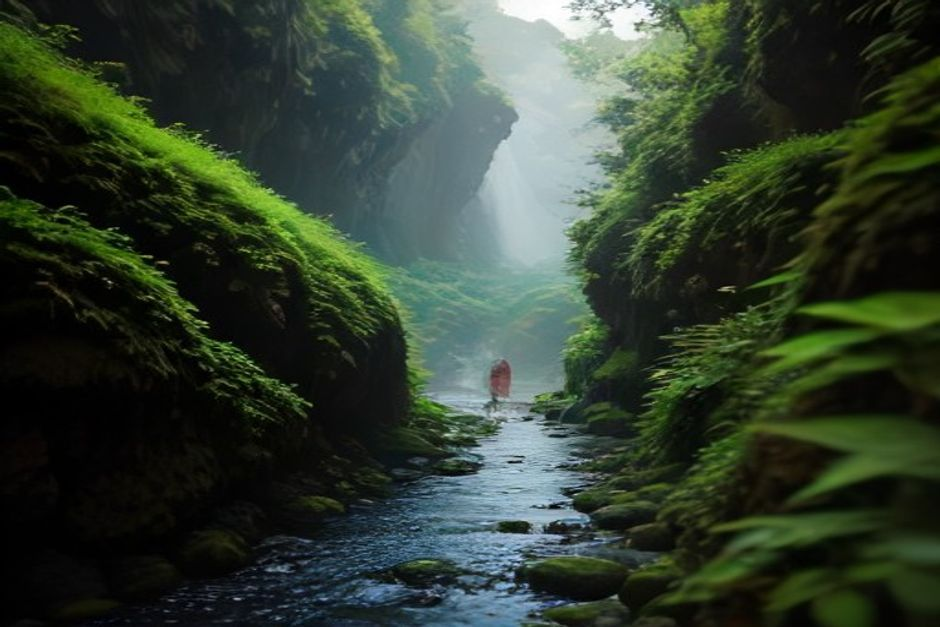
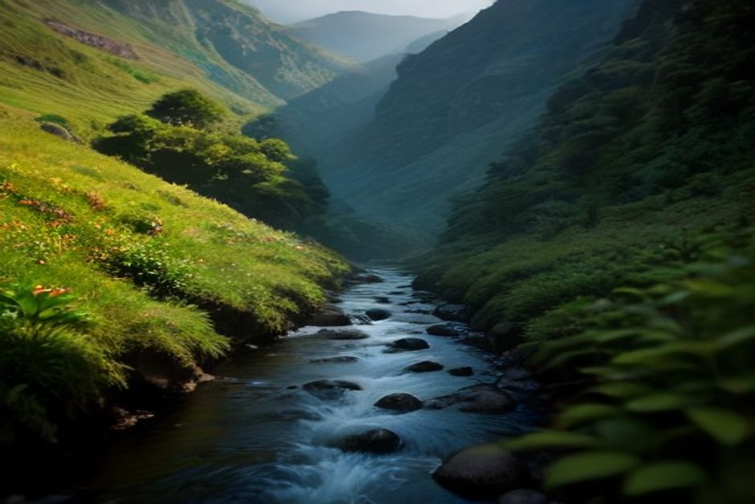

Levada das 25 Fontes is the walk every guidebook puts on page one — and, unlike some over-hyped trails, it earns the spot. Here's what the 2026 booking system actually requires, how to get from the car park to the start, and whether it's worth your day.
Where is Rabaçal, and how do you get there?
Rabaçal sits on the edge of the Paul da Serra plateau in western Madeira, inside the Laurisilva forest, about 50–60 minutes by car from Funchal via the ER110 and VE4. There's no public bus to the trailhead itself, so most visitors arrive by rental car, taxi or organised transfer. The drive alone is worth it — the road climbs through cloud forest before dropping to a small parking area at Rabaçal, one of the greenest, wettest corners of the island.

Do you need to book Levada das 25 Fontes in 2026?
Yes. PR6 is one of the trails covered by Madeira's SIMplifica system, which now requires a small entry fee for the island's most popular levada walks. It works out to roughly €3 per adult over 12, paid online in advance through the official portal at simplifica.madeira.gov.pt, which has an English version. Booking takes a couple of minutes, and you'll want your confirmation ready — rangers do check at the trailhead during busy periods. Children under 12 walk free.
How do you get from the car park to the actual trailhead?
This catches a lot of first-timers out. The free public car park on the ER105 is not at the start of the walk — it sits about 2km above the real trailhead at the Rabaçal Forestry House, down a steep, narrow access road that's closed to general traffic. You have two options: walk down (roughly 20 minutes down, 30–35 minutes back up, which is the real sting since you'll do it at the end of a long day), or take the local minibus shuttle that runs back and forth during daylight hours for a small cash fare each way. Almost everyone who's done it once takes the shuttle the second time.
What is the walk to 25 Fontes actually like?
From the Rabaçal Forestry House, it's about 4.5km each way along a mostly flat levada path — roughly 9km round trip, and 3 to 4 hours including a stop at the pool. The path follows the water channel through dense laurel forest, past ferns, moss-covered rock and the occasional waterfall crossing the trail itself. It ends at Lagoa das 25 Fontes, a shallow, tree-ringed pool fed by numerous small springs seeping out of the rock face — genuinely one of the prettiest spots on the island, and busy enough by mid-morning that an early start pays off.
Can you swim at 25 Fontes?
Technically, yes — but the water comes straight from mountain springs and stays cold year-round, so most people wade in briefly, take photos, and eat lunch on the rocks rather than swim properly. If you want an actual swim on the same trip, that's exactly what the coast is for, and it's a different kind of water altogether — the sheltered coves along Madeira's south coast warm up through summer in a way this pool never will.
Should you also walk to Levada do Risco?
It's worth the extra hour if your legs are willing. Levada do Risco (PR6.1) shares the first stretch of path from Rabaçal before splitting off toward Madeira's tallest single-drop waterfall. Part of that route runs through an unlit tunnel roughly 800 metres long, so bring a head torch or your phone's flashlight — walking it in the dark with a weak torch is not fun. Doing both Risco and 25 Fontes in one outing turns a 3-hour walk into a 4–5 hour one, so plan your return transport accordingly.
How difficult is PR6, and what should you pack?
Officially rated easy to moderate — the path is mostly flat and well maintained, but there are narrow sections with a drop to the levada channel and occasional slippery stone underfoot after rain, which is common at this altitude. Bring proper closed shoes with grip, a light rain layer regardless of the forecast in Funchal (Rabaçal has its own weather), a torch for the tunnel if you're adding Risco, and cash for the shuttle. There's no food for sale on the trail, so pack water and snacks.
When is the best time to go?
Arrive as close to opening as you can manage — by late morning, tour buses fill the car park and the pool gets crowded with people queuing for photos. Spring and early summer bring the fullest waterfalls and greenest forest; late summer is drier underfoot but the springs still run. Weekdays are noticeably quieter than weekends year-round.

Is Rabaçal worth it, and how does it fit into a Madeira trip?
Yes — of everything the island's interior offers, 25 Fontes is the one walk that consistently matches the hype. It's also a useful pairing with a very different side of Madeira: spend the morning in the cool, green forest at Rabaçal, then head back down to sea level for the coast in the afternoon. That's the appeal of a private boat trip with Chifbay from Marina do Funchal — Cabo Girão, a swim stop at Fajã dos Padres or Ribeira Brava, and the warm south-coast water the levada pool never gives you. Mountain in the morning, Atlantic in the afternoon, in the same day.